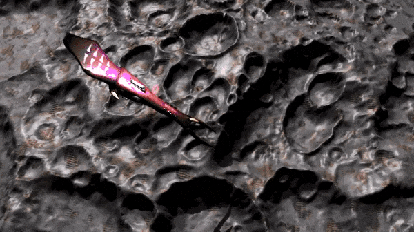
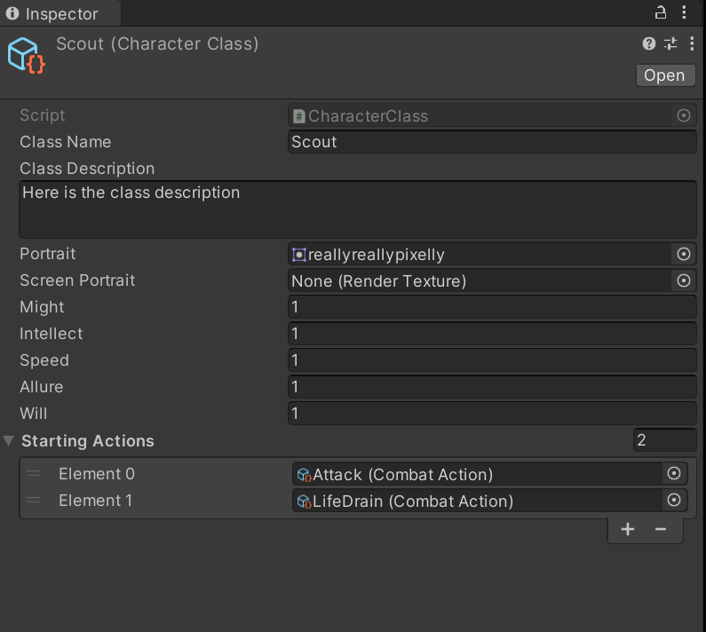
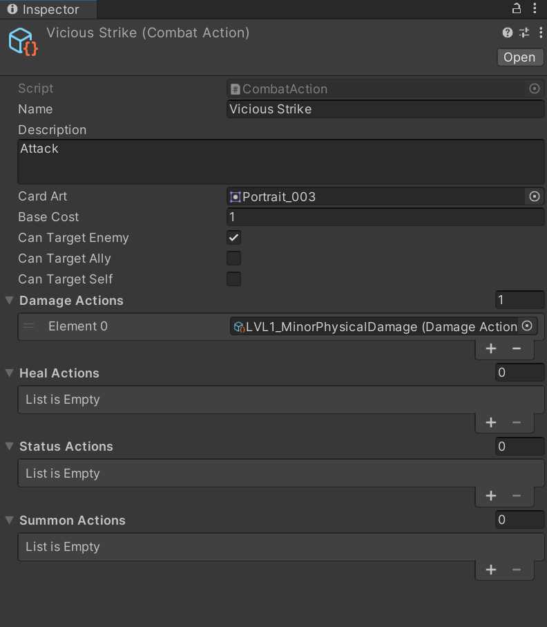
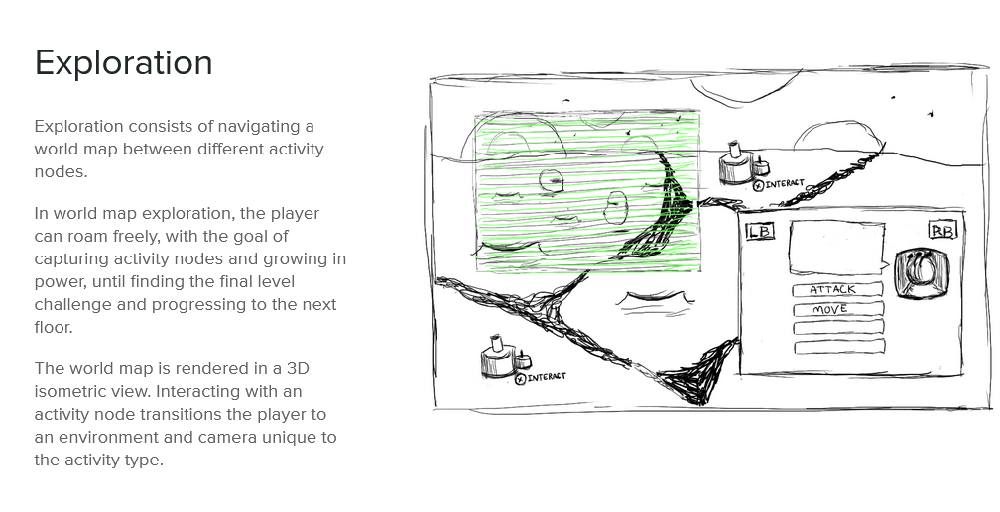

Asteroid Megadungeon
 Project goal:
I wanted a narrowly scoped project in the style of a "walking simulator" where I could produce all of the assets myself.
 I made the setting "deep space" to minimize the need for assets, and wrote a minimal story told through IMGUI Canvas elements where a mysterious alien intelligence directs the player character to collect orbs. Next, I coded two separate player controllers: one for standard first person movement, and another with pitch and yaw for the outer space movement. Finally, I built the end structure directly in Unity using Probuilder, and created the special effects using VFX Graph and particle systems.